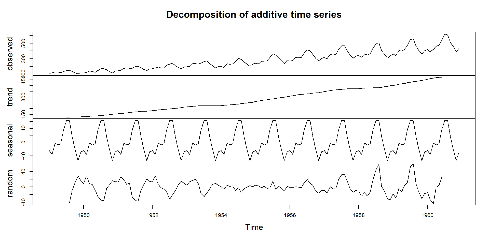
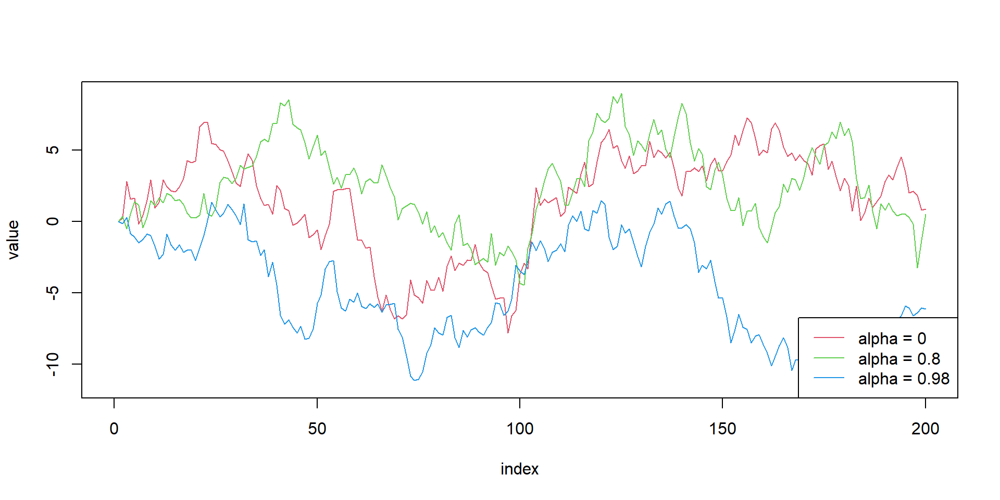

Time Series Analysis
Methods for Real-World Forecasting
Jan 4, 2026
Introduction
- What is time series?
- Examples of time series data
- Why study time series?
Components of time series
A time series can be decomposed into 4 components
- Trend
- long pattern of the series
- positive or negative
- Seasonal
- regular fluctuations in a specific frequency
- Cyclical
- up- down movement over longer periods
- typical business cycles in macroeconomics
- Irregular
- Unpredictable component
Working with R

Time series plot of air passengers data
Working with R
Time series decomposition of air passengers data
Stochastic Process
- a collection of time indexed random variables
- randomness
- time series is actually a realization from certain stochastic process
- stationary and non-stationary process
Stationary Stochastic Process
a discrete stochastic series is stationary if \[\begin{equation} \begin{aligned} &E\left(y_{t}\right)=\mu \\ &E\left(y_{t}-\mu\right)^{2}=\sigma^{2} \\ &E\left[\left(y_{t}-\mu\right)\left(y_{t+k}-\mu\right)\right]=r_{k} \end{aligned} \end{equation}\]
White Noise Process
- sequence of uncorrelated random variables from a fixed distribution
- i.i.d
\[\begin{equation} \begin{aligned} &E\left(y_{t}\right)=\mu=0 \\ &E\left(y_{t}-\mu\right)^{2}=Var(y_t)=\sigma_{\mu}^{2} \end{aligned} \end{equation}\]
Simulation of Stationary process
Jan Feb Mar Apr May Jun
1990 3.2345999 1.3346541 3.4723120 2.3744494 1.6525440 1.2635168
1991 2.5792355 1.3183872 1.5711913 1.9290135 1.1315019 1.4968488
1992 2.8986487 2.5777634 3.6536418 2.2799384 2.1320757 2.0198798
1993 2.4031615 1.4814779 2.2135394 2.4837437 0.6449626 1.1271918
1994 2.7788039 0.2387745 2.9689483 3.3550918 -0.7372783 1.2434869
1995 2.1964621 2.6176800 4.0376727 1.1061555 0.9358887 2.2466650
1996 1.0091899 1.3630740 0.9492085 2.5090687 2.9174192 2.5378997
1997 1.6749925 1.0596712 2.4524284 3.2842468 2.0116064 1.4850363
1998 4.7010243 3.1598581 2.6813194 1.4897477
Jul Aug Sep Oct Nov Dec
1990 1.7907489 3.2065052 2.2377376 3.5486304 1.6069374 1.5386111
1991 0.1522986 1.8578954 1.3662233 2.7353453 2.0092015 1.7335015
1992 0.4767304 0.9995993 2.3459114 1.0406376 2.1676899 1.0333131
1993 0.4447605 0.8893141 1.2100419 3.8081444 1.9846095 2.1291915
1994 0.7385115 1.8857931 1.6139640 0.7114237 2.8516025 1.8313018
1995 1.5999705 1.5052512 1.5834643 1.2203925 2.4436807 1.0007728
1996 -0.4066120 0.1649486 0.5112624 1.6933356 2.2123346 -0.8016030
1997 3.1461995 0.6636826 0.5983557 3.7430592 -0.8767809 2.1909860
1998 [,1]
Jan 1990 3.2345999
Feb 1990 1.3346541
Mar 1990 3.4723120
Apr 1990 2.3744494
May 1990 1.6525440
Jun 1990 1.2635168
Jul 1990 1.7907489
Aug 1990 3.2065052
Sep 1990 2.2377376
Oct 1990 3.5486304
Nov 1990 1.6069374
Dec 1990 1.5386111
Jan 1991 2.5792355
Feb 1991 1.3183872
Mar 1991 1.5711913
Apr 1991 1.9290135
May 1991 1.1315019
Jun 1991 1.4968488
Jul 1991 0.1522986
Aug 1991 1.8578954
Sep 1991 1.3662233
Oct 1991 2.7353453
Nov 1991 2.0092015
Dec 1991 1.7335015
Jan 1992 2.8986487
Feb 1992 2.5777634
Mar 1992 3.6536418
Apr 1992 2.2799384
May 1992 2.1320757
Jun 1992 2.0198798
Jul 1992 0.4767304
Aug 1992 0.9995993
Sep 1992 2.3459114
Oct 1992 1.0406376
Nov 1992 2.1676899
Dec 1992 1.0333131
Jan 1993 2.4031615
Feb 1993 1.4814779
Mar 1993 2.2135394
Apr 1993 2.4837437
May 1993 0.6449626
Jun 1993 1.1271918
Jul 1993 0.4447605
Aug 1993 0.8893141
Sep 1993 1.2100419
Oct 1993 3.8081444
Nov 1993 1.9846095
Dec 1993 2.1291915
Jan 1994 2.7788039
Feb 1994 0.2387745
Mar 1994 2.9689483
Apr 1994 3.3550918
May 1994 -0.7372783
Jun 1994 1.2434869
Jul 1994 0.7385115
Aug 1994 1.8857931
Sep 1994 1.6139640
Oct 1994 0.7114237
Nov 1994 2.8516025
Dec 1994 1.8313018
Jan 1995 2.1964621
Feb 1995 2.6176800
Mar 1995 4.0376727
Apr 1995 1.1061555
May 1995 0.9358887
Jun 1995 2.2466650
Jul 1995 1.5999705
Aug 1995 1.5052512
Sep 1995 1.5834643
Oct 1995 1.2203925
Nov 1995 2.4436807
Dec 1995 1.0007728
Jan 1996 1.0091899
Feb 1996 1.3630740
Mar 1996 0.9492085
Apr 1996 2.5090687
May 1996 2.9174192
Jun 1996 2.5378997
Jul 1996 -0.4066120
Aug 1996 0.1649486
Sep 1996 0.5112624
Oct 1996 1.6933356
Nov 1996 2.2123346
Dec 1996 -0.8016030
Jan 1997 1.6749925
Feb 1997 1.0596712
Mar 1997 2.4524284
Apr 1997 3.2842468
May 1997 2.0116064
Jun 1997 1.4850363
Jul 1997 3.1461995
Aug 1997 0.6636826
Sep 1997 0.5983557
Oct 1997 3.7430592
Nov 1997 -0.8767809
Dec 1997 2.1909860
Jan 1998 4.7010243
Feb 1998 3.1598581
Mar 1998 2.6813194
Apr 1998 1.4897477White noise process in R

Autocorrelation and Autocovariance Functions
both as functions of only time differences \(|t-s|\)
Autocovariance \[\begin{equation} \gamma_{k}=\operatorname{Cov}\left(Z_{t}, Z_{t+k}\right)=E\left(Z_{t}-\mu\right)\left(Z_{t+k}-\mu\right) \end{equation}\]
Autocorrelation Function (ACF) \[\begin{equation} \rho_{k}=\frac{\operatorname{Cov}\left(Z_{t}, Z_{f+k}\right)}{\sqrt{\operatorname{Var}\left(Z_{f}\right)} \sqrt{\operatorname{Var}\left(Z_{t+k}\right)}}=\frac{\gamma_{k}}{\gamma_{0}} \end{equation}\]
Implementation in R
Univariate Time Series
Stationary Time Series
3 important process
Moving Average (MA) \[ y_{t}=\mu+u_{t}+\phi_{1} u_{t-1}+\phi_{2} u_{t-2}+\ldots+\phi_{t} u_{t} \]
Autoregressive (AR) \[ y_{t}=a+b_{1} y_{t-1}+b_{2} y_{t-2}+\ldots .+b_{p} y_{t}+\varepsilon_{t} \]
ARMA Process \[ \begin{aligned} &y_{t}=a+b_{1}y_{t-1}+b_{2}y_{t-2}+\ldots+b_{p}y_{t-p} \\ &+u_{t}+\phi_{1} u_{t-1}+\phi_{2} u_{t-2}+\ldots+\phi_{q} u_{t-q} \end{aligned} \]
Steps in analysis of stationary series
- Identification
- visual inspection


Formal identification
Autocorrelation Function

Formal identification (Cont.)
Partial Autocorrelation Function

Formal identification (Cont.)

Summary of Patterns to look for
Non-stationary Process
- A variable \(y_t\) is non-stationary, if it has time varying mean or time varying variance or both
- There is no mean reversion
- 3 types
- Random Walk without drift
- Random walk with drift
- Random walk with drift and deterministic trend
Random walk - Simulation
# Set-up
alphas<-c(0,0.8,0.98)
obs<-array(0,200)
list_rw<-list()
for(m in 1:3){
for(i in alphas){
for (j in 2:length(obs) ){
obs[j]=i*obs[j-1]+rnorm(1)
}
}
list_rw[[m]]<-obs
}
#limit calculation
ymax=max(sapply(list_rw,max))
ymin=min(sapply(list_rw,min))
#empty plot
plot(NULL, xlab = "index", ylab = "value", xlim = c(0, length(obs)), ylim = c(ymin,ymax))
#plot lines
for(i in seq_along(list_rw)){
lines(x=1:200,y=list_rw[[i]], type = "l", lty = 1, col = i +1 )
}
# Legends
legend("bottomright", legend = paste0("alpha = ", alphas), lty = 1, col = 1 + seq_along(alphas))
Integrated Stochastic Process
RWP is non-stationary but its first difference is stationary \[\begin{equation} \begin{aligned} &y_{t}=y_{t-1}+\varepsilon_{t} \\ &\Delta y_{t}=\varepsilon_{t} \end{aligned} \end{equation}\]
\(y_t\) is said to be integrated of order 1 (\(y_{t} \sim I(1)\))
simillarly, \(y_t \sim I(2)\) if \(\Delta^{2} y_{t}=\varepsilon_{t}\)
Consequences of Non-Stationarity
- Shocks do not “die” out
- Statistical consequences
- Non normal distribution of test statistics
- Bias in AR coefficients
- Poor forecasts
- Spurious Regression
Testing for Non-Stationarity
- Unit root problem
- Conventional Unit root tests
- DF test
- ADF test
- PP test
- DF GLS test
- Unit root with structural breaks
- KPSS stationarity test
Where do we go from here??
Advanced Topics
- ARIMA models
- Modelling Volatility- ARCH/GARCH class of models
- Multivariate time series - VAR/VECM
- Non-linear time series - TAR/SETAR, MRS, KF
https://github.com/nithinmkp/flame-economiga